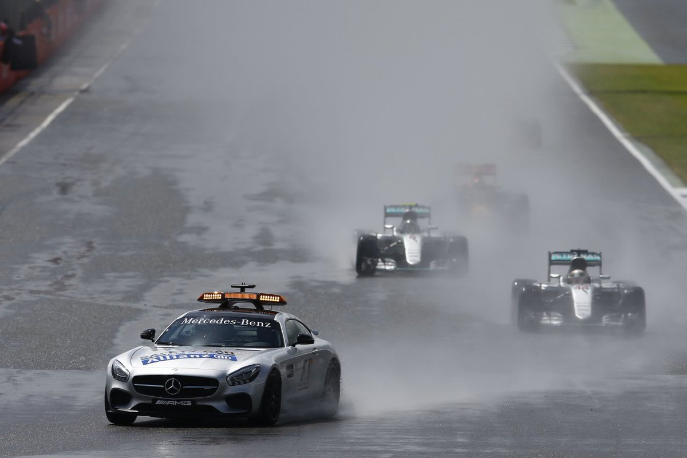

Vanaf 2017 bij een regenrace geen start achter de safety car meer
Het is iets waarover al langer discussie bestaat, de start achter de safety car wanneer het regent of wanneer er te veel regen op het circuit staat. Vanaf 2017 zal er bij een eventuele ‘regenrace’ echter geen start meer achter de safety car plaatsvinden. We krijgen in de plaats een ‘staande’ start, zo heeft de World Motor Sport Council gisteren beslist. 
Er kan nog steeds een voorlopige start achter de safety car worden gegeven waarbij er enkele rondjes achter de safety car worden zodat de rijders kunnen wennen aan de omstandigheden op het circuit. Wanneer het veilig wordt geacht zal de safety car naar binnen rijden en zullen de rijders voortaan hun positie op de startgrid innemen om vervolgens de normale startprocedure af te werken waarbij de rijders starten zodra de rode lichten uitgaan.
Vooral de fans maar ook heel wat rijders en teams deden reeds langer hun beklag over de huidige regelgeving waarbij er bij regen achter de safety car werd gestart en er vervolgens rondenlang achter de safety car werd gereden. Tot eind dit seizoen geldt nog steeds de bestaande procedure waarbij er na de start achter de safety car een ‘vliegende’ start plaatsvindt.